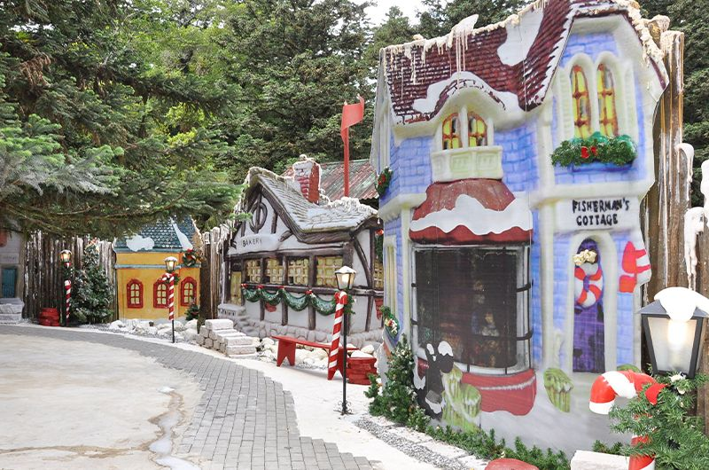

Gramado

Uma das grandes protagonistas da Serra Gaúcha, Gramado está a cerca de 120 km da capital do estado, Porto Alegre. Perfeita para viagens românticas ou em família, a cidade mescla a herança europeia – presente especialmente na arquitetura e na gastronomia – com passeios e pontos turísticos diversos, para todos os perfis de viajantes. Um dos destinos mais visitados e seguros do Brasil, Gramado encanta a todos com seu diversificado calendário de atrações, seu clima europeu e sua hospitalidade, contando com a maior infraestrutura turística do Rio Grande do Sul. Quem passa pela cidade, leva na memória o charme das ruas floridas, os detalhes da arquitetura, a qualidade dos produtos e o cheiro da natureza — momentos únicos.
Museu do Festival de Cinema de gramado
O Festival de Cinema de Gramado é o maior festival de cinema ininterrupto do Brasil. Em constante reinvenção e transformação, começou como uma mostra realizada nos verões da Festa das Hortênsias, evoluindo para o seu formato atual, idealizado por Horst Volk e Romeu Dutra, em janeiro de 1973. Desde então, o evento traz para a Serra Gaúcha renomados cineastas, grandes estrelas e nomes promissores da produção audiovisual, norteando o cinema gaúcho, brasileiro e latino-americano há cinco décadas. O Kikito, deus do bom humor, esculpido em bronze e entregue aos vencedores, é seu maior símbolo, acompanhado do disputado Tapete Vermelho.
Mini Mundo

O Mini Mundo surgiu em 1981, a partir do carinho de um pai e de um avô, que resolveram presentear suas duas crianças, a menina com uma casinha de bonecas e o menino com um conjunto de castelos com trenzinhos, em uma pequena área de lazer, ao lado do Hotel Ritta Röppner, pertencente à família. Aos poucos, essa pequena brincadeira foi crescendo, até que em 1983 ela foi aberta ao público com a inauguração do Mini Mundo.
snowland
No reino de Snowland, em Gramado, tem neve de verdade o ano inteiro. Em qualquer estação o clima é de diversão, com atrações incríveis para todas as idades! Viva a emoção de deslizar pelo gelo, descer a montanha de neve em família e até praticar esportes de neve como esqui e snowboard. Você vai se encantar com shows repletos de magia e emoção. Snowland Gramado, neve de verdade! Na maior montanha de neve do Brasil, a magia da neve toma conta da diversão. Brincadeiras e risadas envolvem crianças e adultos, com momentos de pura descontração para toda a família.
Rua Coberta

A Rua Coberta, originalmente chamada de Madre Verônica, é um dos principais pontos de turísticos em Gramado e está localizada no coração da cidade, bem no centrinho. Ela tem uma cobertura translúcida (por isso o nome "Rua Coberta") e diversas plantas pendentes dão um charme ainda maior ao lugar. Essa rua é um ponto de encontro na cidade: reúne eventos locais, feiras, lojinhas, vários restaurantes e ainda é um refúgio dos turistas nos momentos de chuva.
Parque Olivas

O Olivas de Gramado reúne em um único espaço o melhor da culinária típica dos imigrantes, além de atrações para toda a família como a Fazendinha de mini animais, trilhas na natureza e um passeio entre as paisagens naturais e plantações de oliveira.
Acquamotion
Aquático, Temático e Muito Divertido! Um parque que vai mudar a experiência de Gramado. Talvez você nunca tenha pensado em trazer sua roupa de banho para Gramado, mas isso acabou de mudar. A temperatura lá fora já não importa mais: em Acquamotion você vive as estações do ano em uma experiência sensorial única e mergulha em um mundo de diversão e magia: águas termais quentinhas, piscinas temáticas, toboáguas divertidos e uma história encantadora. Neste universo, seres fantásticos passeiam livres e garantem que o Poder da Alegria reine em todo o lugar. Com eles, as quatro estações acontecem em harmonia e sempre tem clima para ser feliz.
Museu de Cera
A unidade de Gramado foi inaugurada no fim de 2009, como o primeiro museu de cera da América Latina voltado ao entretenimento. Começou com apenas 36 estátuas, que foram arrematadas em leilão e atualmente possui um acervo formado por mais de cem peças. O Museu de Cera de Gramado é o ambiente perfeito para toda a família se divertir e viver momentos inesquecíveis. Imagine só passear por diversos cenários com mais de 100 réplicas incríveis das maiores celebridades do mundo? A ambientação também foi toda pensada para criar uma atmosfera que irá te transportar para o mundo do seu ídolo ou celebridade preferido.
Aldeia do Papai Noel

Um Aviso Importante É hora de unir as forças. Frear a expansão do Covid-19 é um compromisso de todos. Por isso, a partir do dia 21/03/2020, a Aldeia do Papai Noel fecha as portas temporariamente . Papai Noel e seus ajudantes permanecerão em casa, seguindo as orientações de saúde pública, até que passe esse momento difícil. Fazemos isso em respeito à saúde se nossos visitantes e colaboradores.
Fantastic House

Muito mais que um Parque Temático Atrativo vencedor do Travallers Choice 2022, prêmio do TripAdvisor. Comparado a atrações da Disney em Orlando. Com um amplo espaço de mais de 1.200m², a “Casa Fantástica” propõem um tour aos visitantes por ambientes temáticos onde, envolvidos por uma atmosfera de diversão, magia e encantamento, acontecem apresentações artísticas presenciais e virtuais. A experiência para todas as idades reúne música, arte, efeitos tecnológicos, luzes, cores, aromas, brinquedos e personagens que encantam e emocionam o público, que pode participar interagindo nos ambientes. Durante o percurso de, aproximadamente, uma hora, as pessoas são convidadas a desvendar os segredos de como viver uma vida fantástica a partir das memórias de Allegrinho, o ser humano mais feliz de todos os tempos e que, com seus bons sentimentos, originou a “Lenda de Gramado”, cidade que se tornou acolhedora, encantadora e mágica. A história segue alicerçada em quatro pilares: Sonhar, Sorrir, Saber e Amar.